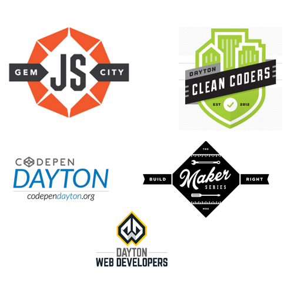
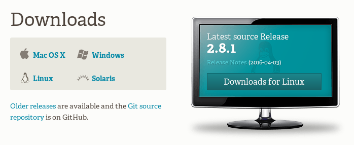

Intro to Git and Github
Welcome!
Girl Develop It is here to empower and assist women interested in learning to code through affordable and accessible programs.
Some "rules"
- We are here for you!
- Every question is important.
- Help each other.
- Have fun!
Girl Develop It is dedicated to providing a harassment free learning experience for everyone. For more information, see our Code of Conduct.
About Me
About the TAs
Sponsor Spotlight!
Sponsor Spotlight!
More Local Web Groups
Housekeeping
- Restrooms - Down the ramp and to your right.
- Refreshments - Help yourself!
- Please step out to take a call.
Introduce Yourself!
Install Discussion
How was the install and playing with command line? Do you have any questions or concepts that you'd like to discuss?
What we will cover today
- What is version control and why should we care?
- Basics of git -- the essential commands
- "Gitting" social with GitHub
What is version control?
Version control allows you (and your team) to do two powerful things
Collaborate
Create anything with other people, from academic papers to entire websites and applications.
Track and revert changes
Mistakes happen. Wouldn't it be nice if you could see the changes that have been made and go "back in time" to fix something that went wrong?
Working without Version Control

The Horror!
Working with Version Control

Rainbows and unicorns!
Brief history of Version Control
1990s -- CVS (Concurrent Version Systems)
2000s -- SVN (Apache Subversion)
2005 -- Git (well, Git)
Version Control Types
Centralized Version Control
Examples: CVS, SVN
One central server, each client (person) checks out and merges changes to main server
Distributed Version Control
Examples: Git, Mercurial
Each client (person) has a local repository, which they can then reconcile with the main server.
Intro to Git
Goals of Git Design
- Fast -- add to your team and code base quickly
- Each commit has a corresponding hash (track changes from everyone)
- Distributed - Everyone has a local copy of the history
Installation and Setup
Install git
Sign Up!
Github
Installation and Setup
Setup ssh keys
Installation and Setup
Get SSH Key
Installation and Setup
Add SSH Key to Github

Installation and Setup
Setup name and email in gitconfig
Your first Local Repository
Go to home directory
Your first Local Repository
Create a "working directory"
Initialize repository with Git
Add files
Create a new hello_world.txt file in your new folder
Check repo status
Tell Git to track our new file
File is now tracked by Git
Changes and commits
Open hello_world.txt and add some more text
Stage and commit the change
What did we just do??
How is this all different than just saving a file?
- When we add a new file, we tell Git to add the file to the repository to be tracked
- A commit saves changes made to a file, not the file as a whole. The commit will have a 'hash' so we can track which changes were committed when and by whom.
Questions?
Look at our progress
Nobody's Perfect
Undoing local changes
If you haven't committed yet
Open hello_world.txt and add some new text
Look at hello_world.txt. Your changes are gone.
Nobody's Perfect
Undoing staged changes
Open hello_world.txt and add some new text
Look at hello_world.txt. Your changes are gone.
Nobody's Perfect
Undoing staged changes
Open hello_world.txt and add some new text
Look at hello_world.txt. Your changes are gone.
Nobody's Perfect
Remove a file from staging
Create new file my_new_file.txt
Nobody's Perfect
Delete a file
Create new file my_other_file.txt
Manually delete your file
Questions? and Break?
Branching
- Develop different code on the same base
- Conduct exploratory work without affecting the work on master branch
- Incorporate changes to your master branch only when you are ready
Branching
Create a new branch called version2
Add new lines to hello_world.txt
Branching
Switching branches
See all branches. Branch with * is active
Switch to master and look at hello_world.txt
Switch to version2 and look at hello_world.txt
Merging
Merge to get changes from one branch into another*
Switch to master and merge changes
*rebase is another option, but will not be covered in this workshop
Merging
Merge conflicts
Change first line in hello_world.txt in master branch
Change first line in hello_world.txt in version2 branch
Merging
Merge conflicts, cont.
Merge from master into version2
You will be notified of a conflict. Go to the file and fix the problem. Then commit your edits.
GitHub
- Launched in 2008
- Leader in Social Coding
- GitHub is a commercial site that allows users to host Git repositories publicly and privately
- Open source projects host or mirror their repositories on GitHub
- Post your own code for others to use or contribute to
- Use and learn from the code in other people's repositories
GitHub
Create your first repository

GitHub
Create your first repository

GitHub
ReadME
While a README isn't a required part of a GitHub repository, it is a very good idea to have one. READMEs are a great place to describe your project or add some documentation such as how to install or use your project. You might want to include contact information - if your project becomes popular people will want to help you out.
GitHub
Get Local Repository of GitHub Repo
GitHub
Push to GitHub Repo
Edit the ReadMe file
Go look at your github repo online
GitHub
Pulling from remote repository
If you are working with a team, you want to make sure that you have everyone's changes before pushing your changes to the GitHub repo
Forking
- There are MILLIONS of public repositories on GitHub
- If you want to use or contribute to a repository, you can fork it.
Forking

Forking
Cloning
Clone to get a local repository of your fork
Pull Requests
- After you fork and clone a repository all pushed changes will go to your fork
- These changes will not affect the original repository
- If you would like to get your changes to be incorporated into the original repo, you can submit a pull request
Starting a pull request

Previewing and sending pull request

Managing pull requests
How to manage pull requests is out of the scope of this short workshop, but you can learn more from the Github Collaborating Tutorials
Help!
'command' above can be 'add', 'commit', 'log', etc...
Help!
StackOverflow
Congrats!
While Git is a very complicated tool, you should now know the basics and how to further your knowledge.